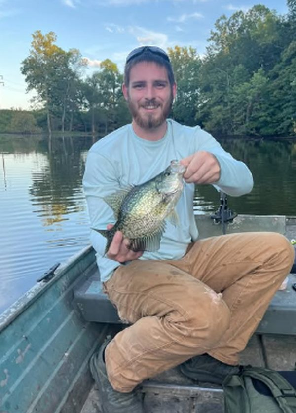

"Slab crappie — logged in 4 seconds."
Built on the water
Made in DeSoto, Illinois — not a boardroom.
Stringer Pro is built solo by Taylor Streeter, an angler from Jackson County who got tired of digging through DNR websites before every trip to Crab Orchard, Kinkaid and the Big Muddy.
The rules are an angler's rules: only genuinely public water makes the map — about a hundred ponds were cut because the public couldn't legally fish them. Regulations are never behind a paywall. And there are no ads and no trackers — the privacy policy fits on one page and means it.
The crappie on the badge? That's a real one, from a real jon boat, on water that's in the app.